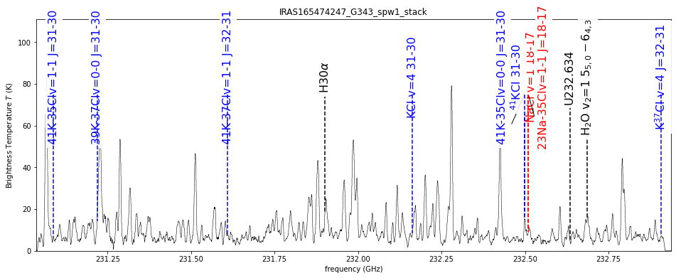
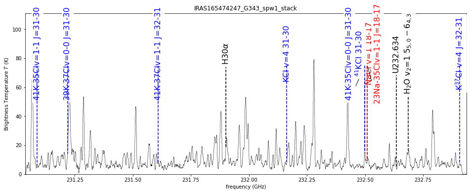
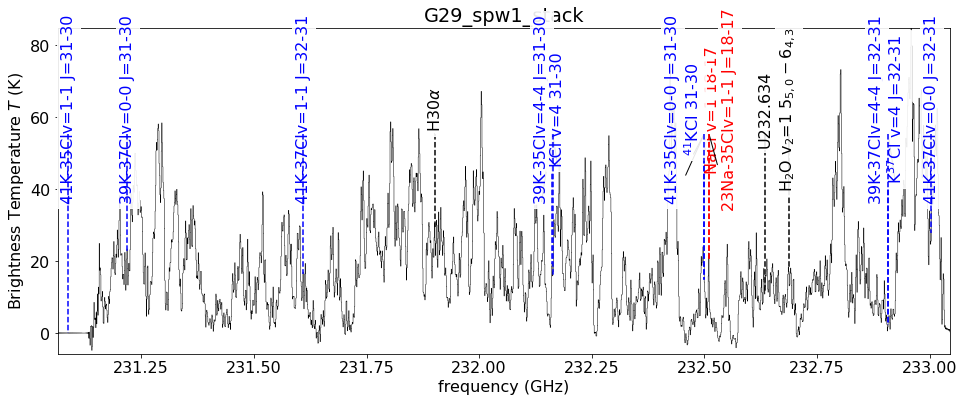
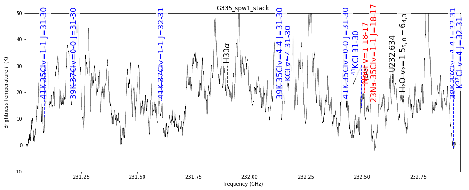
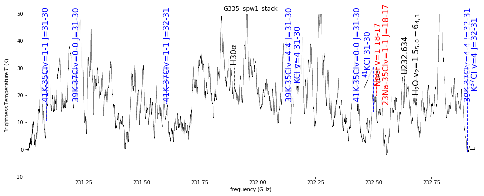
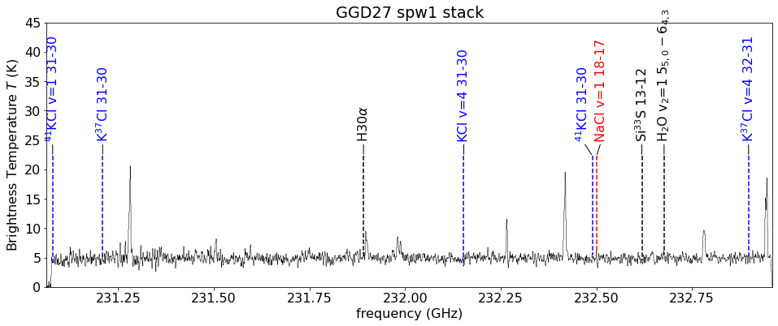
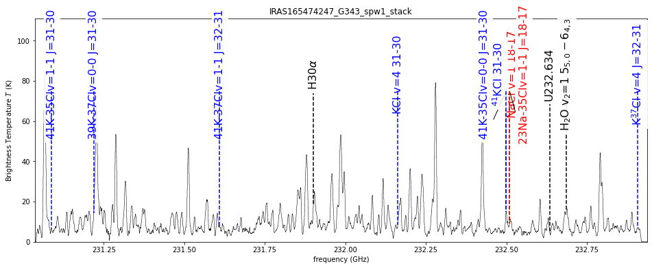
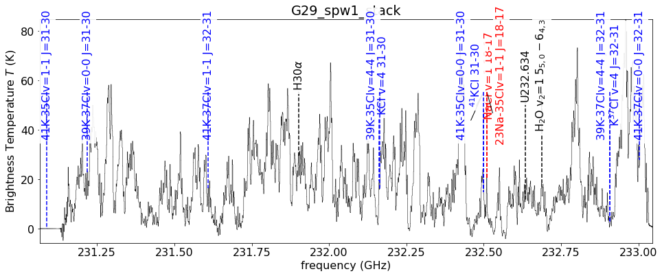
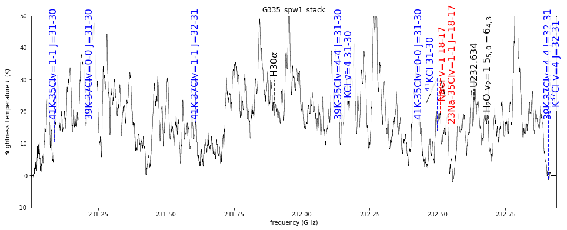
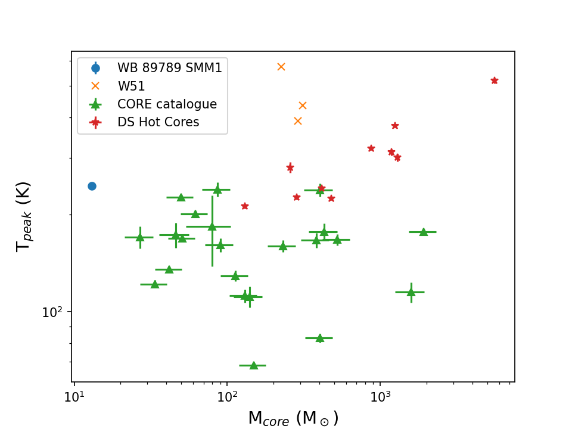

- To move slides, use the arrow keys or swipe on your mobile device
- To see the speaker notes, press "s"
- To go to full screen, press "f"
- To print as PDF, go to this URL: ?print-pdf, then print.
- To get a PDF with speaker notes, add ?print-pdf&showNotes=true to the URL.
Salt
Brett McGuire, Patricio Sanhueza, Fernando Olguin, Luke Maud, Henrik Beuther, Kei Tanaka, Yichen Zhang, Ciriaco Goddi,
Richard Plambeck, Melvyn Wright, John Bally, Tomoya Hirota, Nick Indriolo
Slides available at
https://keflavich.github.io/talks/salts_spjc_oct2022.html
Summary
Salt is seen in disks around HMYSOs- It is not detected in the ISM (maybe Sgr B2)
- Salt is not seen in outflows (but maybe at the interface between disk & outflow)
- NaCl and KCl are correlated with water, SiS, and PN.
- Salt is uncorrelated with COMs and ionized gas.
- Salt excitation is weird.
- There are many observable and useful transitions between 5 and 120 GHz
Salt (and water, SiS, and PN) questions
- Where do we see salt?
- Why isn't it ubiquitous? (it's not)
- Where does the salt come from?
- What excites it?
- Where else do we (should we) see it? Protoplanetary disks? AGN?
- What other species might coincide with brine?
Where do we see salts?
- Red supergiant atmospheres
- (CRL2688, IRAS+10216, VY CMa, IK Tau)
- Massive young star disks (at least 9; this talk)
- aside: there more HMYSO disks than evolved stars with reported salt now
- Exoplanet atmospheres?
- (hypothesized in hot jupiter clouds)
Orion Source I
a disk around a 15 M⊙ YSO
Salt: NaCl
Brinary disks: NaCl moment 0 images


Brine lines measure dynamical mass
NaCl v=1 J=18-17
Stack of v=[0,1] Ju=[18,17]
SrcI


15 M⊙
30 M⊙
40 M⊙
Ginsburg+ 2019,
Maud+ 2019


Big, R=230-850 au (Ilee+ 2018)
detections

 

nondetections

 



What will the ngVLA see?

Non-LTE (RADEX) calculations ...

... hint that ngVLA-band lines may be brighter
(if density is too low to populate higher states)
What will the ngVLA see?

What will the ngVLA see?
It's worse in young sources
Decin+ 2016 suggest thermal desorption will remove all salt from grain surfaces for $T_D > 100-300$ K, depending on assumed binding energy
If $T_D>300$ K is all that is required, why do we not see salts in hot cores? (see talk by Desmond Jeff)

$T\gtrsim200$K → $r\lesssim 2$ au for L⊙ stars
But the gas temperature required for gas-phase salts could be anywhere between 100 < T < 600 K.
What others might exist in these regions?
FeS? FeO? LiCl? HCl? AlCl? AlOAlO?
What's next for salts?
Deep VLA observations of low-J lines in Orion
Salt backup slides
What have we learned about brinaries?
- Reasonably common: ~6-9 known so far, ~15 HMYSO candidates examined
- Y: SrcI, G17, IRAS16547 A and B, G351mm1 and mm2, W33A?, NGC6334I?
- Ginsburg+ 2019, Ginsburg+ submitted, Tanaka+ 2020
- N: I16523, I18089, G11, G5, NGC6334IN, S255IR NIRS3, G333.23-0.06, I18162
- Y: SrcI, G17, IRAS16547 A and B, G351mm1 and mm2, W33A?, NGC6334I?
- Coincide w/line-poor sources
- Not hot cores; little mass reservoir?
- Or is the core resolved out?
- Trace reasonably symmetric disks (in the well-resolved cases)
- Though there remains controversy: there's at least one case where the brinary emission is along the apparent outflow
Compare: G17 vs G11.92
G17: Brinary
Hot (ionizing) photosphere. Circular disk.
G11.92: Not-Brinary
Line-rich!Big, R=230-850 au (Ilee+ 2018)
Compare: G17 vs GGD27
G17: Brinary
Hot (ionizing) photosphere. Circular disk.

GGD27: Not-Brinary
SO, CH3OH lines. But line-poor!



What molecules correlate (in our sample of 23)?
Resolution is a (weak) predictor of salt detection
The gallery of brinaries with moment maps
Current measurements give $T_{rot}\sim50-150$ K $\rightarrow\sim$few K for ngVLA.
(but, $T_{vib}\sim1000$ K )
... hint that ngVLA-band lines may be brighter
(if density is too low to populate higher states)
Open question: What excites salt emission?
- Key to make specific predictions of line brightness
- Requires good models of disk vertical structure around high-mass stars
Why are rotational/vibrational temperatures different?
Why are rotational/vibrational temperatures different?
VY CMa vs Orion Src I
Both have $T_{vib}-T_{rot}$ disagreementIt's worse in young sources
A contrived model
When does salt enter the gas phase?
Depends on the binding energy of NaCl to grain surfaces.Decin+ 2016 suggest thermal desorption will remove all salt from grain surfaces for $T_D > 100-300$ K, depending on assumed binding energy
(this range is consistent with VY CMa observations)
If $T_D>300$ K is all that is required, why do we not see salts in hot cores? (see talk by Desmond Jeff)
When does salt enter the gas phase?
If $T_D>300$ K is all that is required, why do we not see salts in hot cores? (see talk by Desmond Jeff) When does salt enter the gas phase?
At atmospheric pressure: T~500-600K (Woitke+ 2018)
Briny emission should occur in low-mass disks too
$T\gtrsim200$K → $r\lesssim 2$ au for L⊙ stars
But the gas temperature required for gas-phase salts could be anywhere between 100 < T < 600 K.
Does salt have friends?
NaCl, KCl, SiS, PN, and H2O coincide.(AlO is also present in Orion)
What others might exist in these regions?
FeS? FeO? LiCl? HCl? AlCl? AlOAlO?
Summary
Salt is seen in disks around HMYSOs- NaCl and KCl are correlated with water, SiS, and PN.
- Salt is not seen in outflows or molecular clouds.
- It is uncorrelated with COMs and ionized gas.
- Its excitation is weird.
- There are many observable and useful transitions between 5 and 120 GHz
Questions:
- Where does the salt come from?
- What temperature regions?
- What radii? Vertical scales
- What excites it?
- Why is $T_{vib}\sim1000$ but $T_{rot}\sim100$ K?
- Why isn't it ubiquitous?
- Where else do we (should we) see it?
Deep VLA observations of low-J lines in Orion
Possible future uses for these lines?
- Metallicity measurement in deeply embedded star-forming environments? (at least of Na, K, Cl)
- Disk kinematics of high-mass stars, which are otherwise unobservable (τ>1 at mm wavelengths)
- Disk kinematic measurements at early stages?
- Probe dust destruction (and/or formation?) in outflows, disks?
- Probe radiation environment around HMYSOs?
Why do we see salt?
- Previously, NaCl & KCl only in AGB* atmospheres,
associated with dust formation - Most likely dust destruction here
Dust destruction happens immediately as the outflow is launched? - What about excitation? We see vibrationally excited lines, which are not seen in AGB*s
We do not have a viable model to explain these temperatures
A strong non-blackbody radiation field from 25-40 µm may explain them.
Forsterite (MgSiO4) has some emission bands in that range. Maybe?